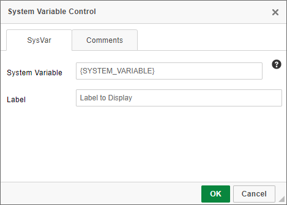

The System Variable control enables system variables to be displayed on a Form or used in a conditional TAG. Selecting the Show System Variable menu item will insert a form TAG that will be substituted with the appropriate system variable. The system variable will be replaced by the actual value when the form is displayed to the user. For example, this can be used to return information about the workflow process, the current user, Meta Data, and many other types of information.
For the Online Form Designer, the Properties dialog box for this control has a SysVar property that you can use to manually type the System Variable you wish to display. Refer to the System Variables Reference Guide for a list of all the existing System Variables, their available formats and options, and examples of the proper syntax to invoke them.
